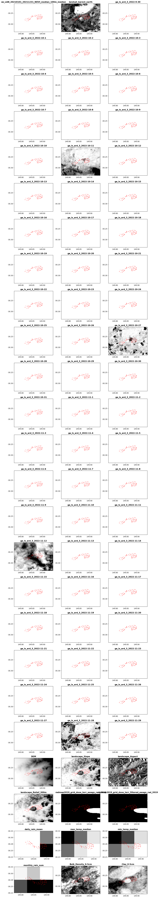

import harvest
df = harvest.run(path_to_config = "settings/settings_v0.6.yaml", preview=True, return_df=True)
dfStarting the data harvester -----
ℹ Found the following 7 sources: ['DEA', 'DEM', 'Landscape', 'Radiometric', 'SILO', 'SLGA', 'GEE']
Downloading from API sources -----
⊙ Initialising Earth Engine... 3.9s
✔ Earth Engine authenticated
⌛ Downloading Google Earth Engine data...
ℹ Running preprocess()
⊙ Applying scale, offset and cloud masks... 0.3s
⊙ Computing spectral index: NDVI 0.4s
⊙ Reducing image pixels by median 0.0s
✔ Google Earth Engine preprocessing complete
ℹ Running download()
ℹ Band(s) selected: NDVI
⚑ ee_LAN_20210101_20211231_NDVI_median_100m.tif already exists, skipping download
✔ Google Earth Engine download(s) complete
⌛ Downloading DEA data...
⚑ landsat_barest_earth.tif already exists, skipping download
⚑ ga_ls_ard_3.tif already exists, skipping download
⚑ ga_ls_ard_3.tif already exists, skipping download
⚑ ga_ls_ard_3.tif already exists, skipping download
⚑ ga_ls_ard_3.tif already exists, skipping download
⚑ ga_ls_ard_3.tif already exists, skipping download
⚑ ga_ls_ard_3.tif already exists, skipping download
⚑ ga_ls_ard_3.tif already exists, skipping download
⚑ ga_ls_ard_3.tif already exists, skipping download
⚑ ga_ls_ard_3.tif already exists, skipping download
⚑ ga_ls_ard_3.tif already exists, skipping download
⚑ ga_ls_ard_3.tif already exists, skipping download
⚑ ga_ls_ard_3.tif already exists, skipping download
⚑ ga_ls_ard_3.tif already exists, skipping download
⚑ ga_ls_ard_3.tif already exists, skipping download
⚑ ga_ls_ard_3.tif already exists, skipping download
⚑ ga_ls_ard_3.tif already exists, skipping download
⚑ ga_ls_ard_3.tif already exists, skipping download
⚑ ga_ls_ard_3.tif already exists, skipping download
⚑ ga_ls_ard_3.tif already exists, skipping download
⚑ ga_ls_ard_3.tif already exists, skipping download
⚑ ga_ls_ard_3.tif already exists, skipping download
⚑ ga_ls_ard_3.tif already exists, skipping download
⚑ ga_ls_ard_3.tif already exists, skipping download
⚑ ga_ls_ard_3.tif already exists, skipping download
⚑ ga_ls_ard_3.tif already exists, skipping download
⚑ ga_ls_ard_3.tif already exists, skipping download
⚑ ga_ls_ard_3.tif already exists, skipping download
⚑ ga_ls_ard_3.tif already exists, skipping download
⚑ ga_ls_ard_3.tif already exists, skipping download
⚑ ga_ls_ard_3.tif already exists, skipping download
⚑ ga_ls_ard_3.tif already exists, skipping download
⚑ ga_ls_ard_3.tif already exists, skipping download
⚑ ga_ls_ard_3.tif already exists, skipping download
⚑ ga_ls_ard_3.tif already exists, skipping download
⚑ ga_ls_ard_3.tif already exists, skipping download
⚑ ga_ls_ard_3.tif already exists, skipping download
⚑ ga_ls_ard_3.tif already exists, skipping download
⚑ ga_ls_ard_3.tif already exists, skipping download
⚑ ga_ls_ard_3.tif already exists, skipping download
⚑ ga_ls_ard_3.tif already exists, skipping download
⚑ ga_ls_ard_3.tif already exists, skipping download
⚑ ga_ls_ard_3.tif already exists, skipping download
⚑ ga_ls_ard_3.tif already exists, skipping download
⚑ ga_ls_ard_3.tif already exists, skipping download
⚑ ga_ls_ard_3.tif already exists, skipping download
⚑ ga_ls_ard_3.tif already exists, skipping download
⚑ ga_ls_ard_3.tif already exists, skipping download
⚑ ga_ls_ard_3.tif already exists, skipping download
⚑ ga_ls_ard_3.tif already exists, skipping download
⚑ ga_ls_ard_3.tif already exists, skipping download
⚑ ga_ls_ard_3.tif already exists, skipping download
⚑ ga_ls_ard_3.tif already exists, skipping download
⚑ ga_ls_ard_3.tif already exists, skipping download
⚑ ga_ls_ard_3.tif already exists, skipping download
⚑ ga_ls_ard_3.tif already exists, skipping download
⚑ ga_ls_ard_3.tif already exists, skipping download
⚑ ga_ls_ard_3.tif already exists, skipping download
⚑ ga_ls_ard_3.tif already exists, skipping download
⚑ ga_ls_ard_3.tif already exists, skipping download
⚑ ga_ls_ard_3.tif already exists, skipping download
⚑ ga_ls_ard_3.tif already exists, skipping download
⌛ Downloading DEM data...
⊙ Retrieving coverage from WCS server 0.2s
⚑ DEM_SRTM_1_Second_Hydro_Enforced_2023_01_16.tif already exists, skipping download
⌛ Downloading Landscape data...
⚑ Landscape_Slope.tif already exists, skipping download
⚑ Landscape_Aspect.tif already exists, skipping download
⚑ Landscape_Relief_300m.tif already exists, skipping download
⌛ Downloading Radiometric data...
⚑ radmap2019_grid_dose_terr_awags_rad_2019.tif already exists, skipping download
⚑ radmap2019_grid_dose_terr_filtered_awags_rad_2019.tif already exists, skipping download
⌛ Downloading SILO data...
⚑ daily_rain for 2022 already exists, skipping download
⚑ max_temp for 2022 already exists, skipping download
⚑ min_temp for 2022 already exists, skipping download
⚑ monthly_rain for 2022 already exists, skipping download
⌛ Downloading SLGA data...
⚑ SLGA_Bulk_Density_0-5cm.tif already exists, skipping download
⚑ SLGA_Bulk_Density_0-5cm_5percentile.tif already exists, skipping download
⚑ SLGA_Bulk_Density_0-5cm_95percentile.tif already exists, skipping download
⚑ SLGA_Clay_0-5cm.tif already exists, skipping download
⚑ SLGA_Clay_0-5cm_5percentile.tif already exists, skipping download
⚑ SLGA_Clay_0-5cm_95percentile.tif already exists, skipping download
Extracting data points for example-site_llara.csv -----
⊙ • ee_LAN_20210101_20211231_NDVI_median_100m | pixel size: (145, 201) 0.2s
⊙ • landsat_barest_earth | pixel size: (77, 107) 0.0s
⊙ • ga_ls_ard_3_2022-9-30 | pixel size: (77, 107) 0.0s
⊙ • ga_ls_ard_3_2022-10-1 | pixel size: (77, 107) 0.0s
⊙ • ga_ls_ard_3_2022-10-2 | pixel size: (77, 107) 0.0s
⊙ • ga_ls_ard_3_2022-10-3 | pixel size: (77, 107) 0.0s
⊙ • ga_ls_ard_3_2022-10-4 | pixel size: (77, 107) 0.0s
⊙ • ga_ls_ard_3_2022-10-5 | pixel size: (77, 107) 0.0s
⊙ • ga_ls_ard_3_2022-10-6 | pixel size: (77, 107) 0.0s
⊙ • ga_ls_ard_3_2022-10-7 | pixel size: (77, 107) 0.0s
⊙ • ga_ls_ard_3_2022-10-8 | pixel size: (77, 107) 0.0s
⊙ • ga_ls_ard_3_2022-10-9 | pixel size: (77, 107) 0.0s
⊙ • ga_ls_ard_3_2022-10-10 | pixel size: (77, 107) 0.0s
⊙ • ga_ls_ard_3_2022-10-11 | pixel size: (77, 107) 0.0s
⊙ • ga_ls_ard_3_2022-10-12 | pixel size: (77, 107) 0.0s
⊙ • ga_ls_ard_3_2022-10-13 | pixel size: (77, 107) 0.0s
⊙ • ga_ls_ard_3_2022-10-14 | pixel size: (77, 107) 0.0s
⊙ • ga_ls_ard_3_2022-10-15 | pixel size: (77, 107) 0.0s
⊙ • ga_ls_ard_3_2022-10-16 | pixel size: (77, 107) 0.0s
⊙ • ga_ls_ard_3_2022-10-17 | pixel size: (77, 107) 0.0s
⊙ • ga_ls_ard_3_2022-10-18 | pixel size: (77, 107) 0.0s
⊙ • ga_ls_ard_3_2022-10-19 | pixel size: (77, 107) 0.0s
⊙ • ga_ls_ard_3_2022-10-20 | pixel size: (77, 107) 0.0s
⊙ • ga_ls_ard_3_2022-10-21 | pixel size: (77, 107) 0.0s
⊙ • ga_ls_ard_3_2022-10-22 | pixel size: (77, 107) 0.0s
⊙ • ga_ls_ard_3_2022-10-23 | pixel size: (77, 107) 0.0s
⊙ • ga_ls_ard_3_2022-10-24 | pixel size: (77, 107) 0.0s
⊙ • ga_ls_ard_3_2022-10-25 | pixel size: (77, 107) 0.0s
⊙ • ga_ls_ard_3_2022-10-26 | pixel size: (77, 107) 0.0s
⊙ • ga_ls_ard_3_2022-10-27 | pixel size: (77, 107) 0.0s
⊙ • ga_ls_ard_3_2022-10-28 | pixel size: (77, 107) 0.0s
⊙ • ga_ls_ard_3_2022-10-29 | pixel size: (77, 107) 0.0s
⊙ • ga_ls_ard_3_2022-10-30 | pixel size: (77, 107) 0.0s
⊙ • ga_ls_ard_3_2022-10-31 | pixel size: (77, 107) 0.0s
⊙ • ga_ls_ard_3_2022-11-1 | pixel size: (77, 107) 0.0s
⊙ • ga_ls_ard_3_2022-11-2 | pixel size: (77, 107) 0.0s
⊙ • ga_ls_ard_3_2022-11-3 | pixel size: (77, 107) 0.0s
⊙ • ga_ls_ard_3_2022-11-4 | pixel size: (77, 107) 0.0s
⊙ • ga_ls_ard_3_2022-11-5 | pixel size: (77, 107) 0.0s
⊙ • ga_ls_ard_3_2022-11-6 | pixel size: (77, 107) 0.0s
⊙ • ga_ls_ard_3_2022-11-7 | pixel size: (77, 107) 0.0s
⊙ • ga_ls_ard_3_2022-11-8 | pixel size: (77, 107) 0.0s
⊙ • ga_ls_ard_3_2022-11-9 | pixel size: (77, 107) 0.0s
⊙ • ga_ls_ard_3_2022-11-10 | pixel size: (77, 107) 0.0s
⊙ • ga_ls_ard_3_2022-11-11 | pixel size: (77, 107) 0.0s
⊙ • ga_ls_ard_3_2022-11-12 | pixel size: (77, 107) 0.0s
⊙ • ga_ls_ard_3_2022-11-13 | pixel size: (77, 107) 0.0s
⊙ • ga_ls_ard_3_2022-11-14 | pixel size: (77, 107) 0.0s
⊙ • ga_ls_ard_3_2022-11-15 | pixel size: (77, 107) 0.0s
⊙ • ga_ls_ard_3_2022-11-16 | pixel size: (77, 107) 0.0s
⊙ • ga_ls_ard_3_2022-11-17 | pixel size: (77, 107) 0.0s
⊙ • ga_ls_ard_3_2022-11-18 | pixel size: (77, 107) 0.0s
⊙ • ga_ls_ard_3_2022-11-19 | pixel size: (77, 107) 0.0s
⊙ • ga_ls_ard_3_2022-11-20 | pixel size: (77, 107) 0.0s
⊙ • ga_ls_ard_3_2022-11-21 | pixel size: (77, 107) 0.0s
⊙ • ga_ls_ard_3_2022-11-22 | pixel size: (77, 107) 0.0s
⊙ • ga_ls_ard_3_2022-11-23 | pixel size: (77, 107) 0.0s
⊙ • ga_ls_ard_3_2022-11-24 | pixel size: (77, 107) 0.0s
⊙ • ga_ls_ard_3_2022-11-25 | pixel size: (77, 107) 0.0s
⊙ • ga_ls_ard_3_2022-11-26 | pixel size: (77, 107) 0.0s
⊙ • ga_ls_ard_3_2022-11-27 | pixel size: (77, 107) 0.0s
⊙ • ga_ls_ard_3_2022-11-28 | pixel size: (77, 107) 0.0s
⊙ • ga_ls_ard_3_2022-11-29 | pixel size: (77, 107) 0.0s
⊙ • DEM_SRTM_1_Second_Hydro_Enforced_2023_01_16 | pixel size: (78, 108) 0.0s
⊙ • Landscape_Slope | pixel size: (78, 108) 0.0s
⊙ • Landscape_Aspect | pixel size: (78, 108) 0.0s
⊙ • Landscape_Relief_300m | pixel size: (78, 108) 0.0s
⊙ • radiometric_radmap2019_grid_dose_terr_awags_rad_2019 | pixel size: (466, 647) 0.0s
⊙ • radiometric_radmap2019_grid_dose_terr_filtered_awags_rad_2019 | pixel size: (466, 647) 0.0s
⊙ • silo_daily_rain_2022-10-01-2022-11-30 | pixel size: (2, 3) 0.0s
⊙ • silo_max_temp_2022-10-01-2022-11-30 | pixel size: (2, 3) 0.0s
⊙ • silo_min_temp_2022-10-01-2022-11-30 | pixel size: (2, 3) 0.0s
⊙ • silo_monthly_rain_2022-10-01-2022-11-30 | pixel size: (2, 3) 0.0s
⊙ • SLGA_Bulk_Density_0-5cm | pixel size: (156, 216) 0.0s
⊙ • SLGA_Clay_0-5cm | pixel size: (156, 216) 0.0s
✔ Data points extracted to ../dataresults/results.gpkg
🎉 🎉 🎉 Harvest complete 🎉 🎉 🎉| Longitude | Latitude | geometry | ee_LAN_20210101_20211231_NDVI_median_100m_median | landsat_barest_earth | ga_ls_ard_3_2022-9-30 | ga_ls_ard_3_2022-10-1 | ga_ls_ard_3_2022-10-2 | ga_ls_ard_3_2022-10-3 | ga_ls_ard_3_2022-10-4 | ... | landscape_Aspect | landscape_Relief_300m | radmap2019_grid_dose_terr_awags_rad_2019 | radmap2019_grid_dose_terr_filtered_awags_rad_2019 | daily_rain_mean | max_temp_median | min_temp_median | monthly_rain_sum | Bulk_Density_0-5cm | Clay_0-5cm | |
|---|---|---|---|---|---|---|---|---|---|---|---|---|---|---|---|---|---|---|---|---|---|
| 0 | 149.852680 | -30.264663 | POINT (149.85268 -30.26466) | 0.692533 | 1059 | -999 | -999 | -999 | -999 | -999 | ... | 209.138062 | 10.463379 | 33.151680 | 32.962944 | 0.000000 | 22.700001 | 9.8 | 189.500000 | 1.368779 | 27.214527 |
| 1 | 149.884838 | -30.265302 | POINT (149.88484 -30.26530) | 0.221940 | 1082 | -999 | -999 | -999 | -999 | -999 | ... | 279.542847 | 6.037811 | 35.969486 | 35.945480 | 0.199951 | 22.600000 | 9.5 | 189.000000 | 1.362662 | 31.956041 |
| 2 | 149.884838 | -30.265302 | POINT (149.88484 -30.26530) | 0.221940 | 1082 | -999 | -999 | -999 | -999 | -999 | ... | 279.542847 | 6.037811 | 35.969486 | 35.945480 | 0.199951 | 22.600000 | 9.5 | 189.000000 | 1.362662 | 31.956041 |
| 3 | 149.838791 | -30.278542 | POINT (149.83879 -30.27854) | 0.563295 | 1092 | -999 | -999 | -999 | -999 | -999 | ... | 242.743683 | 4.798782 | 29.618393 | 29.478428 | 0.000000 | 22.900000 | 10.1 | 173.199951 | 1.360451 | 32.675858 |
| 4 | 149.830843 | -30.275437 | POINT (149.83084 -30.27544) | 0.737653 | 1160 | -999 | -999 | -999 | -999 | -999 | ... | 242.921112 | 5.204880 | 25.061012 | 24.757614 | 0.000000 | 22.900000 | 10.1 | 173.199951 | 1.334362 | 35.097813 |
| ... | ... | ... | ... | ... | ... | ... | ... | ... | ... | ... | ... | ... | ... | ... | ... | ... | ... | ... | ... | ... | ... |
| 77 | 149.876150 | -30.268262 | POINT (149.87615 -30.26826) | 0.309922 | 961 | -999 | -999 | -999 | -999 | -999 | ... | 293.358765 | 5.082260 | 37.472336 | 37.318092 | 0.199951 | 22.600000 | 9.5 | 189.000000 | 1.359748 | 24.397861 |
| 78 | 149.880983 | -30.257031 | POINT (149.88098 -30.25703) | 0.308536 | 968 | -999 | -999 | -999 | -999 | -999 | ... | 303.995453 | 5.481781 | 32.799522 | 33.024990 | 0.199951 | 22.600000 | 9.5 | 189.000000 | 1.342413 | 37.165508 |
| 79 | 149.891118 | -30.258505 | POINT (149.89112 -30.25850) | 0.214593 | 1023 | -999 | -999 | -999 | -999 | -999 | ... | 292.475159 | 8.076599 | 35.978008 | 36.373024 | 0.199951 | 22.600000 | 9.5 | 189.000000 | 1.340390 | 32.020081 |
| 80 | 149.884329 | -30.261989 | POINT (149.88433 -30.26199) | 0.223606 | 938 | -999 | -999 | -999 | -999 | -999 | ... | 302.740784 | 6.215027 | 34.082840 | 34.138084 | 0.199951 | 22.600000 | 9.5 | 189.000000 | 1.359456 | 33.267685 |
| 81 | 149.899156 | -30.264476 | POINT (149.89916 -30.26448) | 0.213202 | 1191 | -999 | -999 | -999 | -999 | -999 | ... | 277.403259 | 7.094849 | 38.391029 | 38.042816 | 0.199951 | 22.600000 | 9.5 | 189.000000 | 1.354119 | 28.687943 |
82 rows × 78 columns